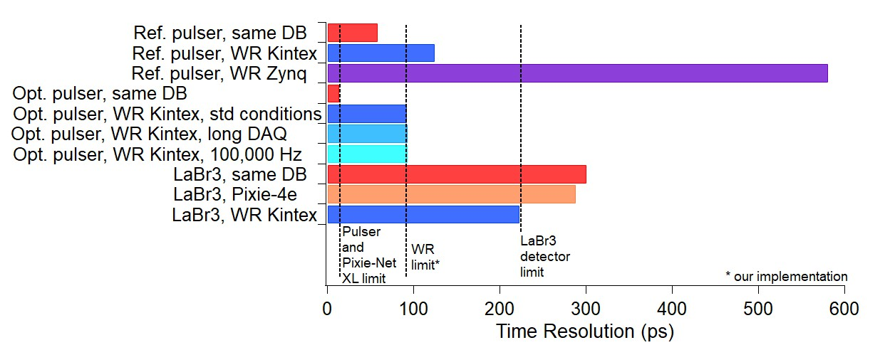
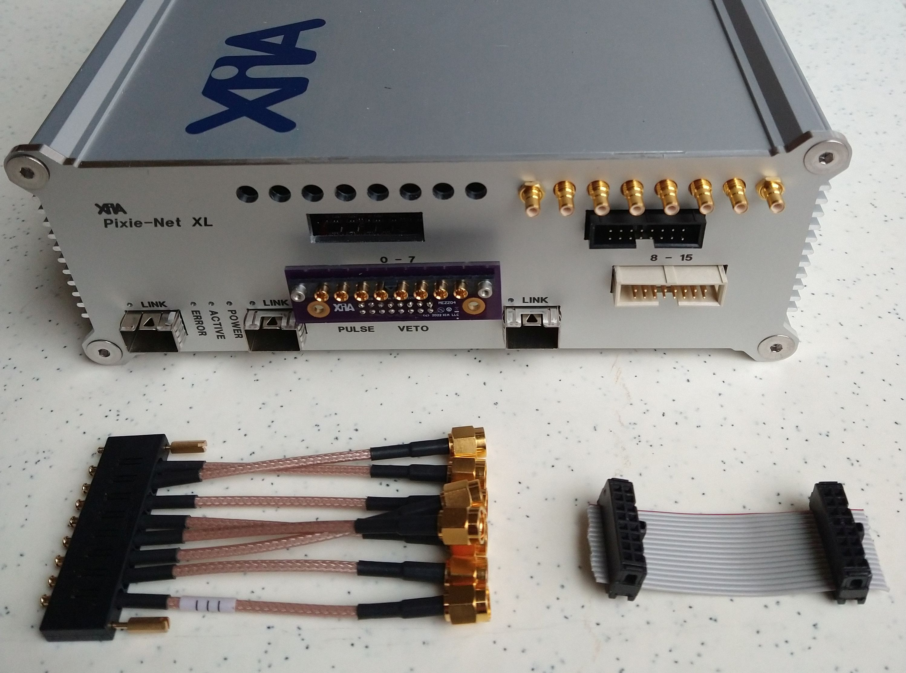

Overview
The Pixie-Net XL is a multi-channel digital pulse processor for radiation detectors in desktop format. It is a larger and faster version of the Pixie-Net.
The Pixie-Net XL is designed for
- On-board MCA spectra.
- Waveform capture.
- Online Constant Fraction Discrimination and Pulse Shape Analysis.
- Local USB and SD storage.
- Web interface.
- 1 or 10 Gbps Ethernet output for list mode data.
- Sub-nanosecond Timing Resolution.
- High Throughput.
Currently available variants:
- 8 channels, 14bit, 125 MHz, variable gain and offset
- 16 channels, 14bit, 250 MHz, fixed gain and variable offset
- 16 channels, 14bit, 250 MHz, fixed gain and variable offset, White Rabbit clock synchronization
Traditional clock/trigger synchronization with dedicated cables is also possible
Performance
Multi-source spectrum with HPGe detector. (Results vary for detector and variant)

A recent paper describing the Pixie-Net XL's timing performance is here
List mode data throughput (with 1us waveforms, saved to disk) per SFP port. See user manual for details
Input Connector Options
- 8-channel, 14bit, 125 MHz variant: 8 SMB connectors
This type of SMB inputs is used for all 8-channel versions of the Pixie-Net XL - 16-channel, 14bit, 250 MHz variant: 0.1 in headers
In most cases, input connections can be made with a 0.1 in ribbon cable (available commercially as plain, shielded, or twisted pair).
In some cases, adapters to coaxial cables are desired. XIA can provide MEZZ adapter Boards and special front panels for this purpose.
MEZZ03: The picture below shows the Pixie-Net XL with MEZZ03 integrated in the right side of the front panel: Coaxial cables can connect to MEZZ03's row of SMB connectors and a short ribbon cable can make the connection from MEZZ03's 0.1 in header (black) to the Pixie-Net XL 0.1 in input header (white)
This configuration is mechanically the most stable and allows quick changes from ribbon cable to SMB cables.
MEZZ04: MEZZ04 can attach to the Pixie-Net XL on the outside as shown for the left input header. Adapters for the GRF1 ganged cable to other coaxial cable styles are commercially available
- [Experimental] 16-channel, 14bit, 250 MHz variant with differential inputs: micro HDMI
Commercially available HDMI cables can be used to bring in differential signals.
Contact XIA for adapters from single ended signals to differential HDMI.
Also available soon with 0.1 in headers.